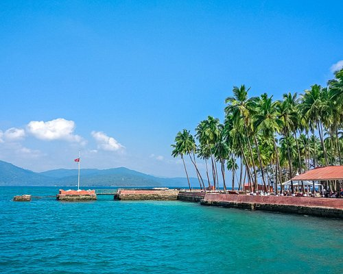
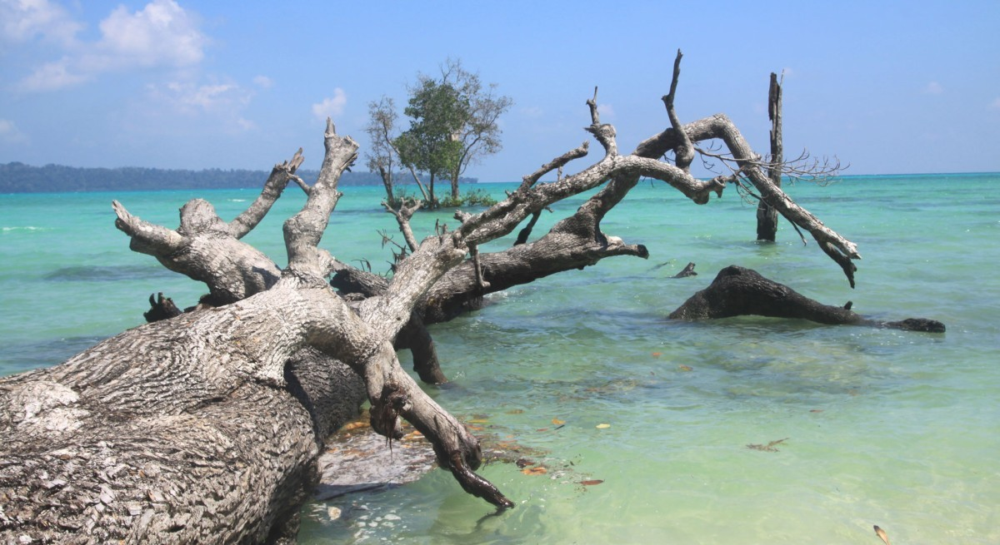

Destinations
-
 -

-

-
Neil Island
Tranquility and Marine Marvels: - Neil Island envelops you in serenity with its...
Read More -
Baratang Island
Nature's Wonders and Limestone Caves: - Baratang Island promises a thrilling...
Read More -
North Bay Island
Underwater Wonders and Adventure: - Don a transparent glass-bottom boat for...
Read More -
Havelock (swarajdeep)
Beach Bliss and Aquatic Adventures: Havelock Island beckons with its...
Read More -
Diglipur
Pristine Beauty and Saddle Peak: Diglipur captivates with its untouched beauty...
Read More -
Barren island
Volcanic Marvel and Marine Life: Barren Island, located in the Andaman Sea...
Read More -
Cinque island
Dazzling Marine Diversity: Cinque Island, located in the Andaman and Nicobar...
Read More -
Jolly buoy island
Marine Sanctuary and Coral Delights: Jolly Buoy Island, located in the...
Read More -
Viper island
Historical Significance and Scenic Beauty: Viper Island, located near Port Blair in...
Read More -
-
